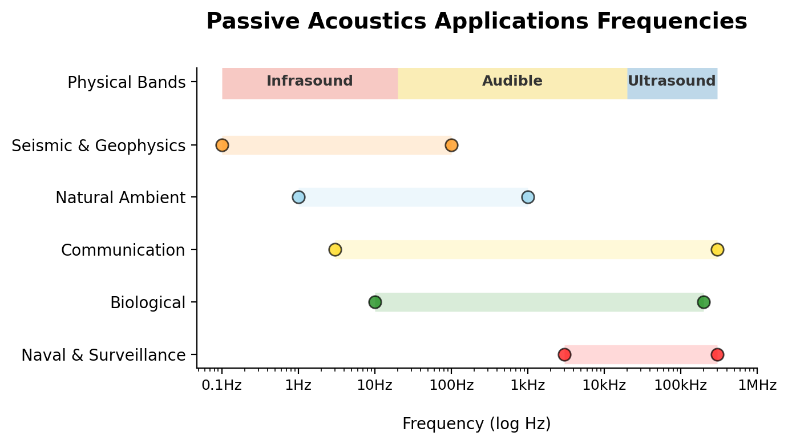
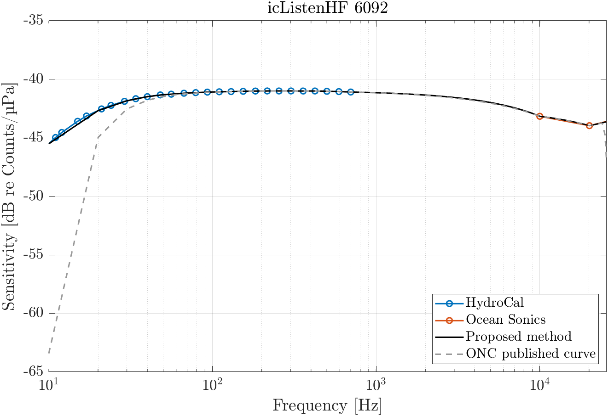

{kind=link}

How do hydrophones work?
ImportantImprovements for this page
- Sensitivity, SNR, other hydrophone types
- references
General
A hydrophone is a device that passively detects acoustic signal underwater. The word hydrophone comes from the Greek hydro (water), and phone (voice).
Acoustic data are recorded in the form of a time-amplitude signal, at a specified sampling rate.
Several types of hydrophones exist depending on the applications, with different frequency range. Some of the most common applications of passive acoustics are:
Passive acoustics: Action of listening to sound without emitting a signal, whereas in active acoustics the emitted signal is then analysed.
- marine mammal monitoring
- ambient noise characterization
- earthquakes detection
From Pressure to Voltage
Hydrophones contain a key element, a piezoelectric material, which “feels” the pressure changes of a passing sound wave, and convert them into electric signals. In such, hydrophones are essentially transducers, as they simply convert potential energy into electrical energy.
Piezoelectric: Material that generates an electric charge in response to applied mechanical stress. As a wave passes, it compresses the ceramic, which creates a proportional electrical voltage.
Transducer: A device that converts energy from one form (acoustic pressure) to another (electrical voltage).
The relationship between the pressure (p) and the voltage (V) is determined by the sensitivity of the hydrophone, usually expressed in dB re 1V/μPa.

The piezoelectric material is often made of ceramics, more specifically Lead-Zirconate-Titanate (PZT) compounds, which are relatively low cost, and have an excellent piezoelectric coefficient. It also has high sensitivity and can operate at wide range of temperatures.
The transducer is often shaped as a cylinder or a sphere, which is ideal for listening to signal from all direction.
Sensitivity
The sensitivity of the hydrophone refers to how efficient the hydrophone converts undewater sound pressure into electrical signal. Quantitatively, it is the ratio of sound pressure signal and the output voltage signal: \[ M_\nu = \frac{V_h}{P_h} \ \ ; \ \ \text{units:} \left[ \frac{V}{\mu Pa} \right] \]
What affects hydrophone sensitivity:
- Hydrophone type: size, design and choice of material (e.g. piezoelectric compound);
- Frequency: piezoelectric hydrophones have a resonance frequency which depends on the piezoelectric material. Sensitivity is usually good below the resonance frequency and drops rapidly above.
- Environmental conditions: water temperature, salinity and pressure can substantially impact hydrophone sensitivity. It is important to calibrate the instrument relative to those conditions.
Knowing the sensitivity is essential to choose the right hydrophone for the right application.
Hydrophones can be separated into three categories:
- Low-Frequency (Infrasonic): …
- Mid-Frequency ():
- High-Frequency (Ultrasonic)

Signal Processing Methods
Several methods are used to convert the recorded electric signal in data we can analyze. One method is Fourier Analysis, where the total signal is decomposed into a set individual frequencies with associated phase and amplitudes.
Fourier Analysis: Signal decomposition method where a complex signal is expressed as superimposition of simple sine and cosine waves of different frequencies.

This way, a time-domain signal is converted into a frequency-domain signal which makes it easier to capture at which frequency most of the energy is. For long periods of sound recording, the signal can be divided into shorter segments of equal lengths, specified by a time-window. The result shows how the spectra changes with time, the spectrogram.
Spectrogram: A visual, three-dimensional representation of a signal’s frequency spectrum as it changes over time

The x-axis is time, the y-axis represents the frequencies in Hz (per second), while the colors represent the level, expressed in logarithm of the signal power in dB.
Note on choosing the window: it’s impossible to have a good resolution in time and frequency at the same time (Heisenberg’s uncertainty principle).
- Short window = good time resolution, poor frequency resolution
- Long window = good frequency resolution, poor time resolution
Hydrophones can be put into three categories, infrasonic, ultrasonic, and ??
Signal to Noise ratio
Signal to Noise ratio is an important element to consider for hydrophones.
A bigger element increases sensitivity, but also can lower SNR.
A rule of thumb is to ensure the measured amplitude is at least 5 times larger than the noise equavalent pressure (NEP) of the hydrophone to maximize the signal to noise ratio (SNR).
\[ NEP [Pa] = \frac{\text{Pre-amp Noise} ~[\mu V]}{\text{Sensitivity} ~[nV~Pa^{-1}] \times \text{Pre-amp Gain}} \times 1000 \]
Other hydrophone types
There are several types of hydrophones (e.g., needle, membrane, fiber optical, piezoelectric, accelerometer, intertia, etc.)
Passive acoustics applications
Passive acoustic monitoring is frequently associated with underwater soundscapes. However, its utility extends far beyond physical oceanography. The versatility of hydrophone technology enables applications ranging from global seismology and tsunami detection to precision medical diagnostics and therapeutic monitoring. The following table categorizes these diverse applications and their associated frequency requirements:
| Category | Applications | Frequency Range |
|---|---|---|
| Seismic & Geophisics | Earthquakes, Tsunami detection, Oil & Gas exploration, Seabed mapping, Subsea leakage. | Sub Hz - 100 Hz |
| Biological | Marine mammal vocalization, Ecosystem studies | 10 Hz - 100 kHz |
| Natural Ambient | Ambient noise monitoring. | 10 Hz - 1000 Hz |
| Naval & Surveillance | Submarine/Vessel detection, harbor surveillance. | 3 kHz – 300 MHz |
| Communication | Submarine communication, navigation. | 3 Hz – 300 kHz |
| Biomedical Ultrasonic | Medical imaging (dermatology, ophthalmology), HIFU therapy, and lithotripsy. | 2 – 15 MHz |
List of technical specs for hydrophones
References
Useful links
Alfresco Documentation